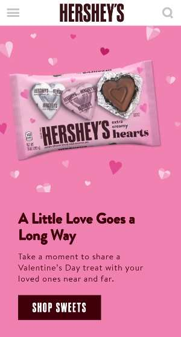
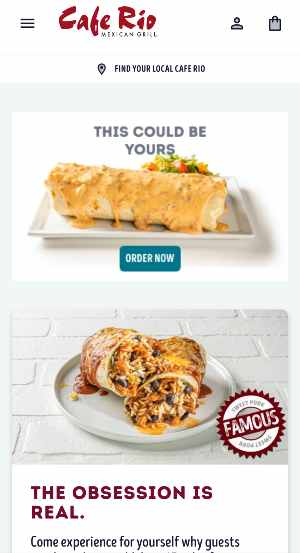
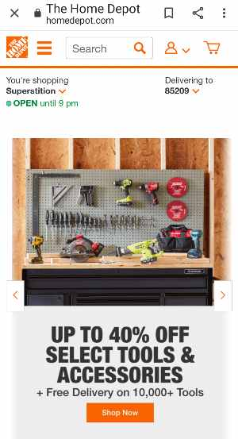

Shannon Payne
Design Principles Document
Visual Hierarchy
Hershey's
This design demonstrates the use of visual hierarchy by calling attention to the most important elements. The image of the chocolate product is the largest and most important element, and is the main focus of the page. The Shop button is very bold with its contrasting color and size, and signifies its importance in the hierarchy, falling just below the product image. The paragraph heading is next in the hierarchy, followed by the paragraph itself. This hierarchy guides the user through the page and highlights the components in a way that will get a quick reaction from the user.
White Space and Clean Design
Cafe Rio
The use of white space and clean design in this page allows the images of the food to be the main focus, as well as the Order buttons. The size of the images and the contrast in color with the white space also boost the product’s presence on the page. The background is uncluttered with unnecessary text and descriptions, because the product speaks for itself. This simple design approach is effective in providing a spotlight for the product that will be visually appealing to the user.
PARC: Repetition
Home Depot
Repetition through the use of the color orange on this page unifies the page elements. Buttons, icons and horizontal rules are consistently orange and contrast with the text and background. There are many elements on this page, and utilizing a consistent color creates harmony by making the page not appear so busy and cluttered. It allows the information to be given, but in a balanced way that does not distract from the products.